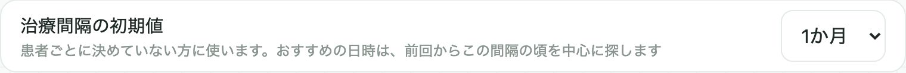
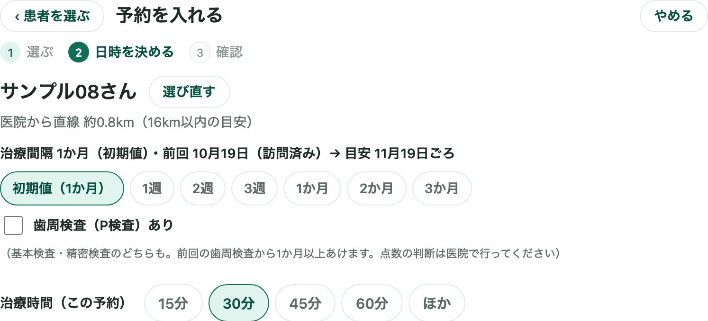
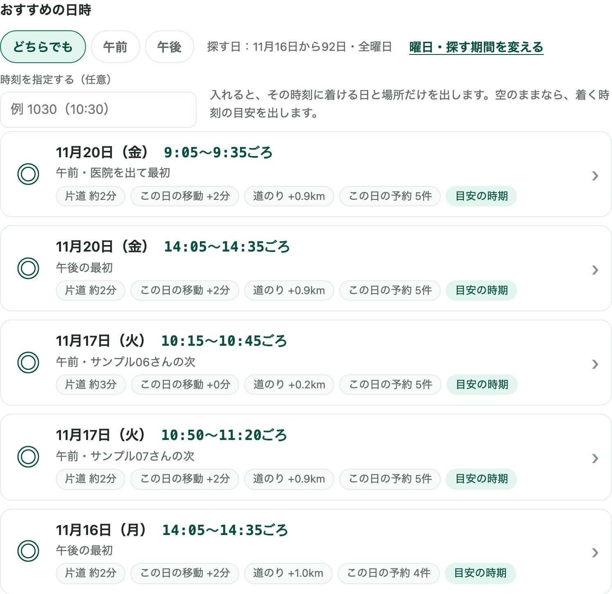
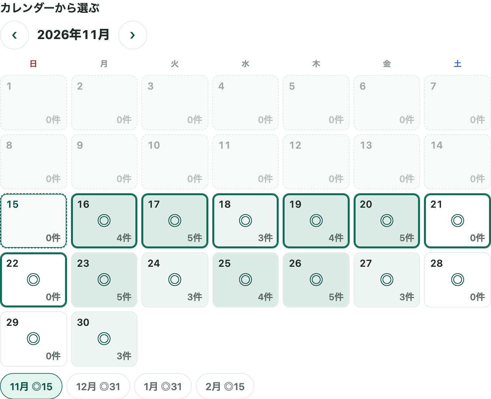
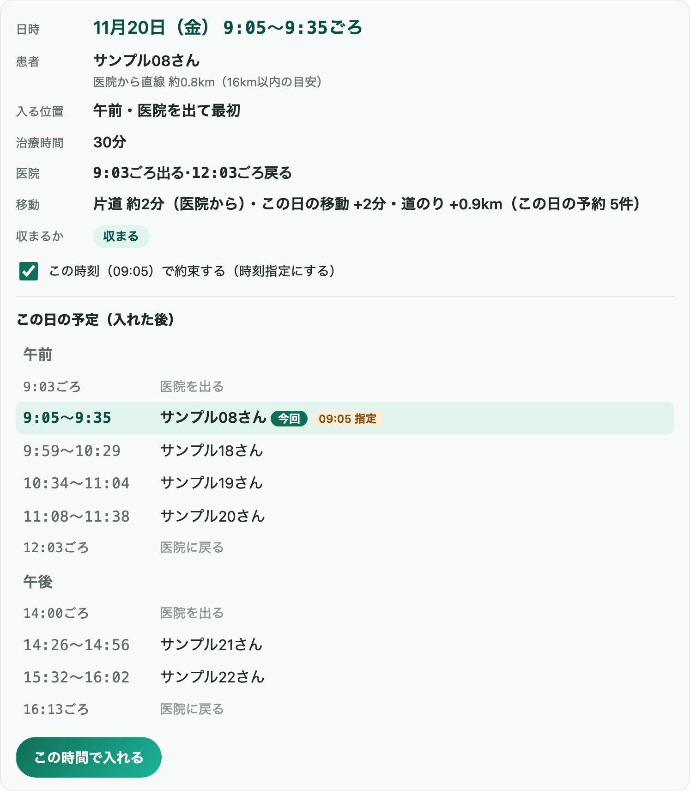
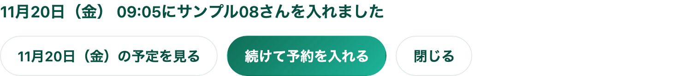

GUIDE — 予約の入れ方
訪問歯科の予約の入れ方──医院で決めた治療間隔を入力する
訪問診療お助けくんで、訪問歯科の次の予約を入れる手順を、実際の画面で説明します。医院で決めた治療間隔を入れておくと、前回の訪問から間隔をあけた頃（目安の時期）を中心に、入れやすい日時を出します。
医院や患者さんの登録がまだの方は、先にはじめての使い方をご覧ください。
POINTS — 先に知っておくと迷わないこと
- 治療間隔は患者さんごとに決められます。決めていない方は、設定の「治療間隔の初期値」を使います
- おすすめの日時は、時刻指定の方への遅れや、午前・午後のはみ出しが計算上増えない日時を探し、移動の増え方を ◎○△ で示します
- 入れる前に、「この日の予定（入れた後）」でその日全体を確かめられます
STEP 1治療間隔を確かめる
患者さんごとの治療間隔と、医院の初期値を確かめます。
- 「患者」の画面で、その方の 編集 を押します。
- 「治療間隔」で、医院で決めた間隔（1週〜3か月）を選びます。「初期値（1か月）」のままなら、設定の初期値を使います。
- 登録 を押します。
間隔を決めていない方の分は、「設定」の「治療間隔の初期値」で決めます。メンテナンスを2週ごとにしている医院は、初期値を2週にしておくと、一人ずつ選ぶ手間が減ります。

目安の時期は、前回の日に治療間隔を足した日です。前回は、訪問済みになっているいちばん新しい日です（無いときは以前の記録）。
今日以降の予約がすでに入っている方は、そのうちいちばん先の予約の日から数えます。前回の記録も今日以降の予約もない方は、目安の時期を出さず、明日から探します。
STEP 2予約の画面で間隔と治療時間を確かめる
予約の画面で、この予約の間隔と治療時間を確かめます。
- 「ホーム」の ＋ 予約を入れる を押し、患者さんを選びます。名前・住所・患者IDの一部で探せます。
- 名前の下の1行に、治療間隔・前回の日・目安の時期が出ます。どの日から数えたかを確かめます。
- この予約だけ間隔を変えるときは、下の間隔のボタンで選び直します。患者さんの間隔として残すときは、出てくる 保存する を押します。
- 「治療時間（この予約）」で、15・30・45・60分か、ほか を押して5分刻みの長さを選びます。

治療時間は、はじめは、探し始める日より前のいちばん近いその方の予約で選んだ長さになっています。その予約で選んでいないときは、設定の「1件の所要時間（分）」です。
治療時間を変えると、おすすめの日時はその長さで計算し直されます。
歯周検査をする予約は、「歯周検査（P検査）あり」を付けます。付けると、はじめに探す期間は、前回の歯周検査から暦の1か月以上あけた日からになります。
前回の歯周検査は、済みになったいちばん新しい歯周検査です（まだ無いときは、今日以降の歯周検査の予約のうちいちばん先のもの。どちらも無いときは1か月の決まりはありません）。探す期間を変えて1か月未満の日を選んだときは、確認の画面に ⚠ の印が出ます（入れることはできます）。
STEP 3目安の日と候補を見比べる
おすすめの日時とカレンダーで、入れる日を見比べます。
おすすめの日時は、時刻指定の方への遅れや、午前・午後のはみ出しが計算上増えない日時を探し、移動の増え方を ◎○△ で示します。時刻指定のない方の到着の目安は変わることがあるので、入れる前に STEP 4 でその日の予定を確かめます。
- 「おすすめの日時」のカードを見比べます。日時・入る位置・この日の移動の増え・この日の予約の件数が並び、目安の時期の頃の候補には「目安の時期」と出ます。
- 午前・午後を決めたいときは 午前 か 午後 を押します。時刻を約束したいときは「時刻を指定する（任意）」に入れると、その時刻に着ける日と場所だけが出ます。
- 曜日や探す期間を変えるときは、曜日・探す期間を変える を押します。
- 入れたい日時のカードを押すと、確認の画面に進みます。

◎ はその日の移動の増えが10分以内、○ は20分以内、△ はそれより多い日時です。移動の増えは5分ごとに比べ、同じくらいなら目安の時期に近い日、早い日から並びます。
設定の「同じ施設の方を同じ日に入れたら知らせる」がオンのときは、同じ施設の方がいる日は後ろに並びます。
下の「カレンダーから選ぶ」では、日ごとの予約の件数と ◎○△ を見ながら日を選べます。枠で囲んだ日が目安の時期で、日を押すと、今の並び順のままその日に入れる位置で確認に進みます。

入れる日が先に決まっているときは、日にちを決めて入れる から、日と午前・午後を選んで入れることもできます。
STEP 4入れた後の予定と時刻指定を確かめて登録する
確認の画面で、入れた後のその日全体を確かめてから入れます。
- 日時・入る位置・治療時間・医院を出る時刻と戻る時刻・移動の増えを確かめます。
- 「この日の予定（入れた後）」で、ほかの方の到着の目安を確かめます。
- 時刻を約束するときは、「時刻指定にする」のチェックを付けたままにします。おすすめの日時から進んでチェックが出ているときは、はじめから付いています。
- この時間で入れる を押します。「日にちを決めて入れる」から進んだときは この日に入れる です。

チェックを付けたままなら、その予約は時刻指定になります。あとで順番を並べ替えても、その時刻に間に合うかを見ながら計算します。
時刻を約束しないときは、チェックを外してから入れます。前の画面で時刻を入れたときはチェックは出ず、その時刻の指定で入るので、約束しないときは戻って時刻の欄を空にしてください。
時刻を約束できる時間が見つからないときは、時刻を決めずに入れられる時間が出ます。このときもチェックは出ず、時刻を決めない予約として入ります。
収まらない日を選んだときは「この日は収まりません（はみ出す）」と出て、ボタンは「はみ出すが、この日に入れる」になります。出ている内容を確かめて、それでも入れるときだけ押してください。
入れたあとは、その日の予定を開くか、続けて次の方の予約を入れられます。

その日の順番の見直しや、時刻指定の方がいる日の回り方は、順番の決め方（使い方）をご覧ください。
よくある質問
おすすめの日時が出ません。
おすすめの日時は、道路データの取り込みが済んでから出ます。道路データの様子は、「設定」の「地図」にある「道路データ」の行で確かめられます。
探す期間に入れられる時間がないときは、その旨が出ます。「曜日・探す期間を変える」で期間を広げるか、午前・午後を変えてみてください。
目安の時期が思っていた日と違います。
目安の時期は、前回の日に治療間隔を足した日です。前回は、訪問済みになっているいちばん新しい日です（無いときは以前の記録）。
今日以降の予約がすでに入っている方は、そのうちいちばん先の予約の日から数えます。名前の下の1行に、どの日から数えたかが出ます。
この予約だけ、治療間隔を変えられますか？
予約の画面の間隔のボタンで、この予約の分だけ変えられます。患者さんの間隔として残すときは、出てくる「保存する」を押します。
押さなければ、患者さんの間隔は変わりません。
時刻を約束しない予約も入れられますか？
入れられます。確認の画面に「時刻指定にする」のチェックが出ているときは、外すと時刻を決めずに入ります。
前の画面の「時刻を指定する（任意）」に時刻を入れたときは、その時刻の指定で入ります。時刻を約束しないときは、戻って欄を空にしてください。
時刻を決めずに入れた方の到着の目安は、その日の順番に合わせて変わることがあります。
到着の時刻に幅があるのはなぜですか？
「9:05〜9:35ごろ」のような幅は、設定の「到着予定の幅（分）」でつけています。到着の目安は、道路の距離と設定の「平均の移動速度」から出す目安で、渋滞などは反映しません。
「訪問診療お助けくん」は、訪問歯科・訪問診療をしている医院のための iPad・iPhone アプリです。その日の訪問の順番を道路の距離を参考に提案し、新しい予約を入れる日時をおすすめします。
医院の iPad・iPhone で同じ予定を共有できます。
患者さん10人までは無料で使えます。※ カーナビ・医療機器ではありません。到着の時刻と道のりは目安で、道案内は Google マップで開きます。
App Store で入手 アプリ紹介ページ出典
- OpenStreetMap「著作権とライセンス」（アプリの道路データの元） https://www.openstreetmap.org/copyright
- 国土地理院「地理院地図」（アプリの地図と住所検索） https://maps.gsi.go.jp/
このページは、アプリのバージョン 1.0.1（2026年11月時点）の画面と動作をもとに書いています。画面は iPad と同じ幅で表示した説明用のもので、患者さんの名前と住所は架空のものです。画面の文言や配置は、今後のアップデートで変わることがあります。「歯周検査（P検査）あり」は、設定で歯科の見本を使っているときに出ます。訪問の可否・間隔・時間・算定の判断は、各医院で行ってください。